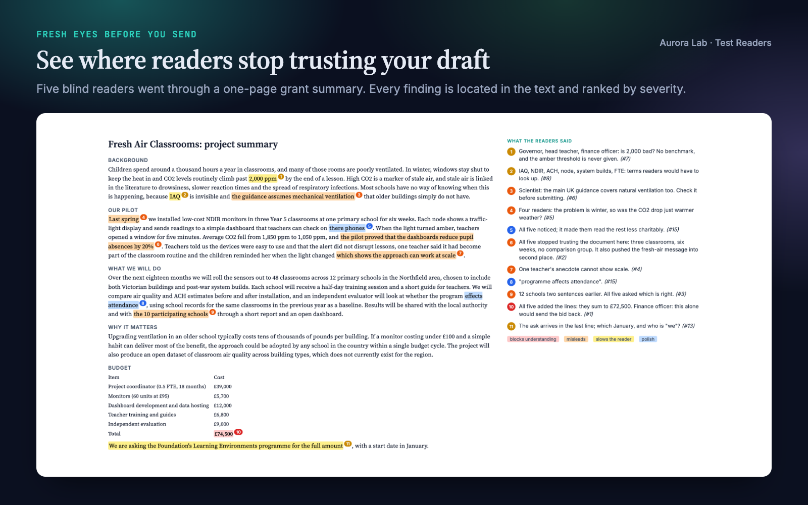
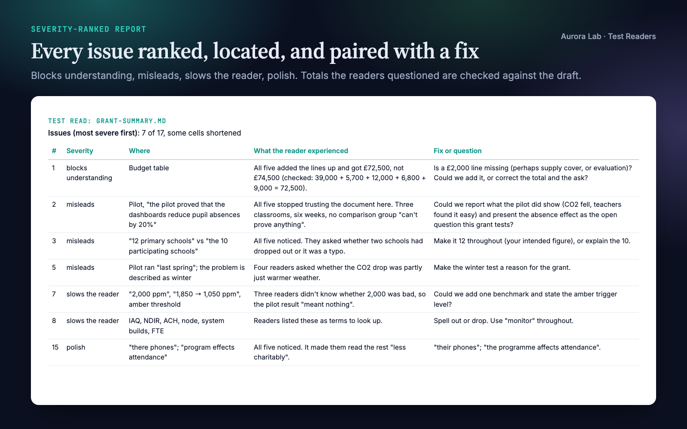
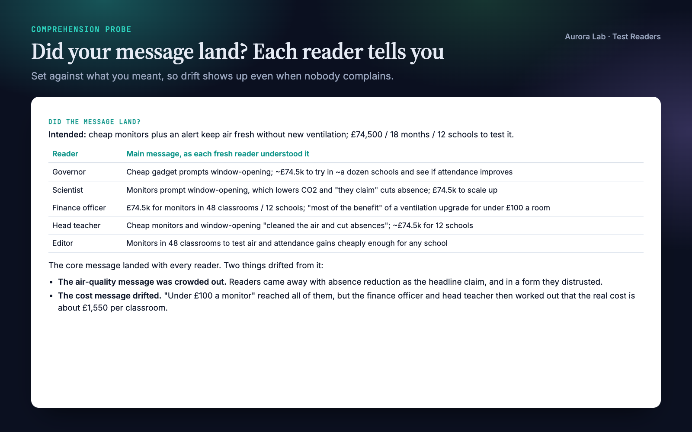
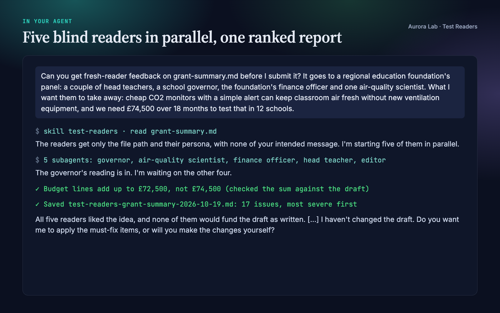

Overview
You can't test-read your own draft: you know what each sentence was meant to say, so that is what you read. A reader who starts with a fresh context has none of that knowledge. Test Readers turns your agent into a panel of such readers:
- Blind readers. Five personas (Newcomer, Expert, Editor, Decision-maker, Skimmer), adapted to your real audience. Each gets only the draft: no outline, no intent, no "section 3 is meant to...".
- Fresh contexts. When your agent can run subagents or start a fresh session, every reader runs in its own, in parallel, so each reading is a genuine first reading.
- A comprehension probe. Each reader states the main message and what they think they are asked to do. Set against what you intended, drift becomes a finding even when nobody complains.
- A severity-ranked report. Every issue is ranked (blocks understanding, misleads, slows the reader, polish), located, described from the reader's side, and paired with a fix or question. Totals and counts the readers question are checked against the draft before they are reported.
- Useful tone. Observations and questions, strengths named as concretely as problems, and your draft left untouched unless you ask.
Quick start
- Get the skill from Agensi (free) and add it to your agent (Claude Code, Codex CLI, Cursor, Gemini CLI or any agent that loads SKILL.md skills).
- Nothing to install. There are no scripts.
- Ask in plain words, saying who will read the draft and what you want them to take away.
Example requests:
- "Get fresh-reader feedback on proposal.md before I send it to the panel."
- "Test-read research/paper/introduction.md. Will a non-specialist reviewer get the point?"
- "Will this email to the department head land? The ask is a second server by March."
- "Run the test readers again on the revised draft."
Want to see a full report first? The skill ships a synthetic draft and the report a real run produced on it: examples/sample-draft.md and examples/sample-report.md.
What you get
These come from a real run: a fresh agent session with only this skill installed, given a synthetic one-page grant summary with realistic problems and the request shown in the last image. The highlights and margin notes on the first image were drawn by us from the skill's report; the report excerpts are from the file the run saved.




How it works
- Scope. Who the real readers are, which kinds of feedback you want (clarity, accuracy, language), how deep (structure or line by line), and the message and action you intend. If you don't say, the agent asks, or infers and lists its assumptions in the report.
- Pick personas. The Newcomer whenever anyone outside your circle will read it; the Expert for technical or factual claims; the Editor for language; the Decision-maker when the draft asks for money, approval or action; the Skimmer for long documents. Three to five is typical.
- Blind packet. Each reader gets the path to the draft and its persona prompt, nothing else. Only the Expert may get background on the field (never on what the draft is trying to say).
- Read. In parallel, one fresh reader per persona. Each reports the main message, what it thinks it is expected to do, every place it got lost or stopped trusting the text (quoted), its persona-specific checks, and what worked.
- Probe. The readers' main message and expected action, side by side with yours.
- Rank. Findings are merged and deduplicated, then sorted strictly by severity; passages several readers tripped on move up. Numbers the readers question are checked against the draft.
- Report. Saved as a Markdown file, with the verdict and the top three issues in the chat. The agent offers to apply the fixes; after major changes, a second round with new readers.
Fresh readers or a careful fallback
Fresh readers are the intended mode. In an agent that cannot run subagents or a fresh session, the agent reads as each persona in separate passes, quoting the draft before reacting, and says at the top of the report that the readings were simulated in one context.
The personas
| Persona | Stands for | Reads by |
|---|---|---|
| Newcomer | The least specialised intended reader, months from now, with no context | Everything once, in order |
| Expert | The most specialised reader | Everything, critically |
| Editor | A careful, fluent reader of the draft's language | Line by line |
| Decision-maker | The person who has to act | The first page, then decides |
| Skimmer | Most real readers of long documents | Headings, first sentences, figures and captions |
The report
| Section | What it holds |
|---|---|
| Header | Personas used, reading mode, date, and any assumptions about scope. |
| Overall | Two or three sentences on whether the draft reaches its purpose, biggest issue first. |
| Keep | What works and why, with specific passages. |
| Did the message land? | Your intended message and action next to each reader's. |
| Issues | One row per issue: severity, where, object (content, structure or language), must fix or suggestion, what the reader experienced, fix or question. |
| Line notes | Optional, grouped by section. |
Files it reads and writes
| File | Read or written |
|---|---|
| The draft you point to | Read. Markdown, plain text, LaTeX, or anything your agent can open (PDFs, rendered slides). |
research/paper/ |
Read, when you give no path and the project has a research/ folder. |
research/claims.md |
Read, optionally, for your intended message. Never given to the readers. |
research/reviews/test-readers-<draft>-<date>.md |
Written: the report. Without a research/ folder it goes next to the draft. |
It writes nothing else and never edits the draft unless you ask.
The research/ folder
Test Readers works on its own. If you keep your project in a research/ folder, it uses the same plain-file convention as the other Aurora Lab research skills, so they cooperate without calling each other:
research/
paper/ manuscript sections (read)
claims.md the paper's claims (read, optional)
reviews/ test-read reports (written)
results/ one JSON file per result
figures/ figures + caption/spec files
refs.bib bibliography
FAQ
Which agents does it work with?
Any agent that loads SKILL.md skills, including Claude Code, Codex CLI, Cursor and Gemini CLI. It works best where the agent can run subagents or start a fresh session. Where it can't, the agent reads as each persona in separate passes and says so in the report.
What kinds of drafts can it test?
Anything your agent can read: papers and paper sections, grant proposals, reports, cover letters, emails, and slides or PDFs if your agent can open them.
Will it rewrite my draft?
No. It writes one report and leaves the draft alone. It offers to apply the fixes and only does so if you say yes.
How long does a test read take, and what does it cost?
Each persona is a separate read, so usage grows with the number of readers and the length of the draft. In our demo, five readers on a one-page grant summary finished in about two minutes.
Can simulated readers replace real ones?
No. They are a fast first test. Real readers know less and are less patient, so for high-stakes pieces the report recommends one real reader from the audience as well.
Do I need the other Aurora Lab skills?
No. They share the research/ folder convention if you want to use them together.
Limitations
- Simulated readers know more and are kinder than real ones. The persona prompt pushes against this, but it is a first test, not a substitute for a real reader.
- Without subagents or a fresh session, the readings share a context that knows your intent, so they are less blind. The report says when this was the case.
- The Expert persona can be wrong about facts. Treat a factual objection as something to check, not a verdict.
- Each persona is a separate read, so a test read uses several times the tokens of a single review.
- It reviews; it does not check references or rewrite the draft unless you ask. Tested on English drafts.
Changelog
1.0.0 · October 2026 · First release.